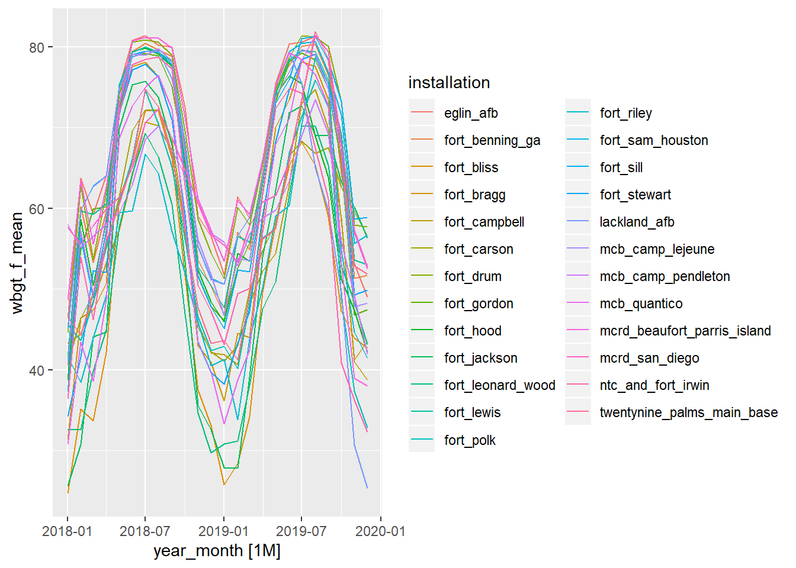
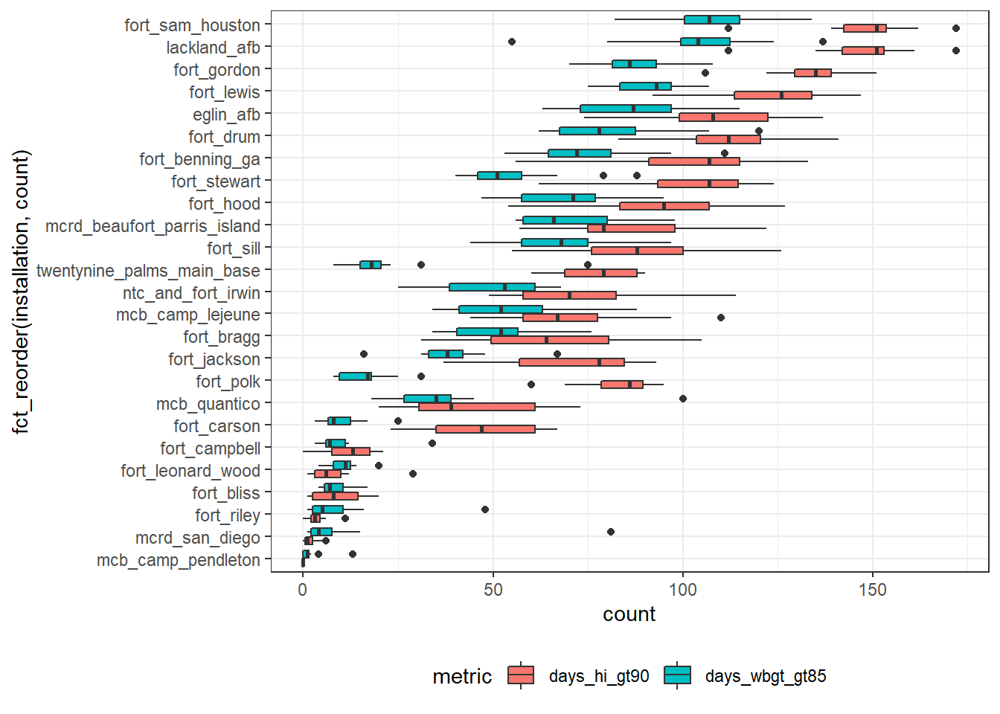
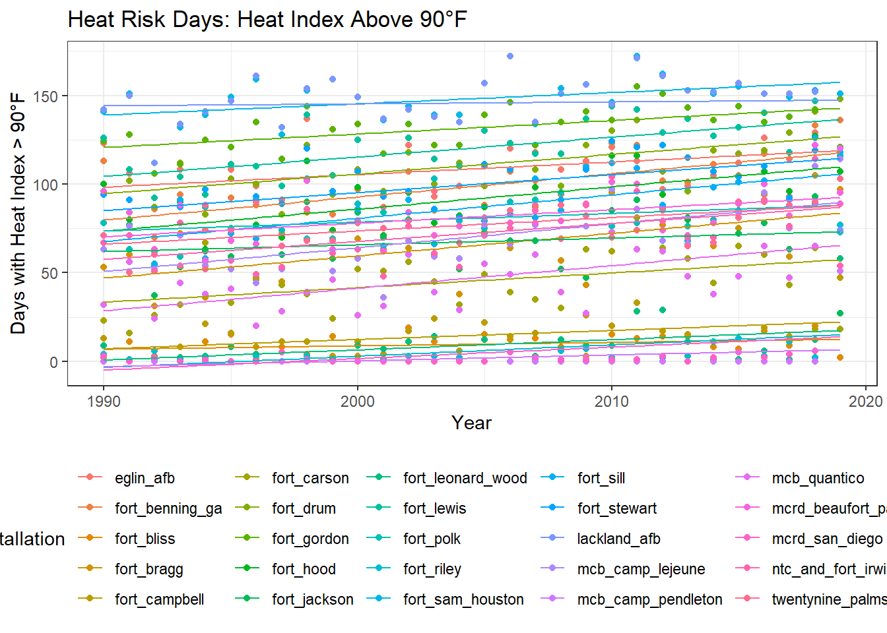
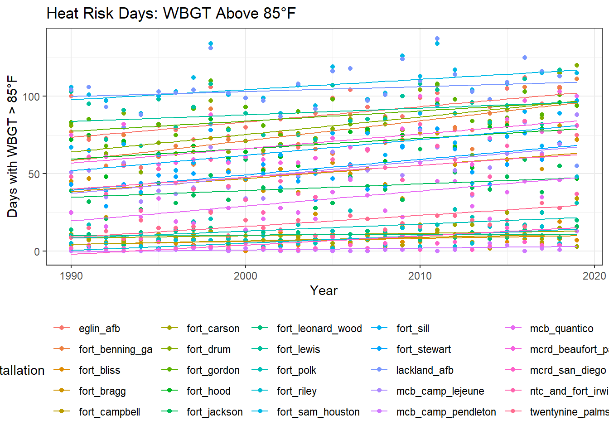
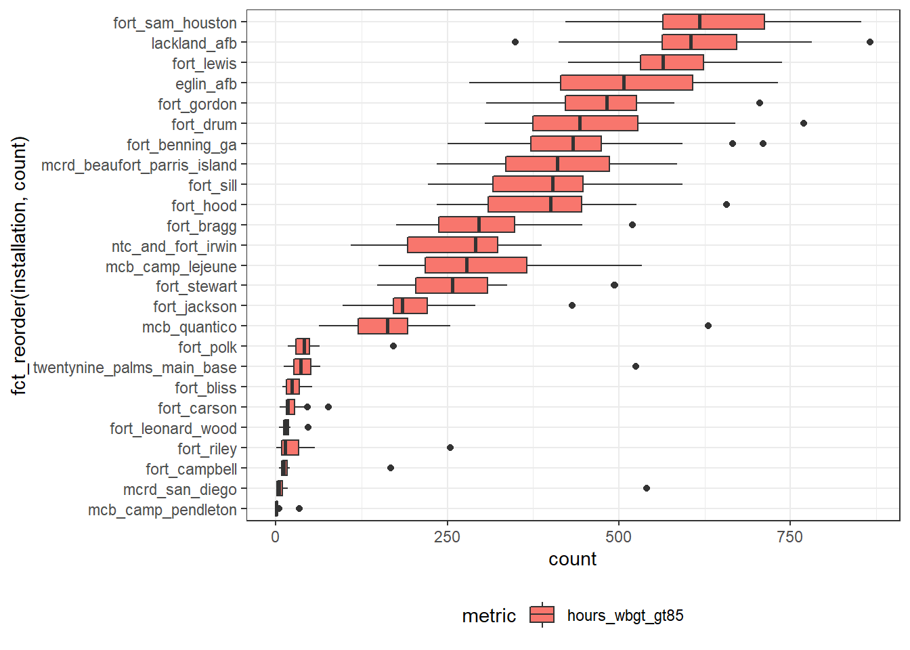

nldas_averaged
We want to use local time for daily averages.
We will modify duplicate times due to the end of daylight savings by adding one second to the repeated time.
nldas_wide <- read_rds("data/nldas_wide.rds")
# Add one second to duplicate times
local_dst_adjust <-
nldas_wide %>%
group_by(installation) %>%
arrange(installation, utc_dttm) %>%
ungroup() %>%
mutate(row = dplyr::row_number()) %>%
tsibble::duplicates(key = installation, index = local_dttm) %>%
filter(local_dttm != lead(local_dttm, default = "1")) %>%
mutate(local_dttm = local_dttm + seconds(1))
local_dst_adjust ## # A tibble: 750 x 20
## utc_dttm local_dttm installation longitude latitude TMP
## <dttm> <dttm> <chr> <dbl> <dbl> <dbl>
## 1 1990-10-28 07:00:00 1990-10-28 01:00:01 eglin_afb -86.5 30.6 287.
## 2 1991-10-27 07:00:00 1991-10-27 01:00:01 eglin_afb -86.5 30.6 296.
## 3 1992-10-25 07:00:00 1992-10-25 01:00:01 eglin_afb -86.5 30.6 292.
## 4 1993-10-31 07:00:00 1993-10-31 01:00:01 eglin_afb -86.5 30.6 279.
## 5 1994-10-30 07:00:00 1994-10-30 01:00:01 eglin_afb -86.5 30.6 292.
## 6 1995-10-29 07:00:00 1995-10-29 01:00:01 eglin_afb -86.5 30.6 285.
## 7 1996-10-27 07:00:00 1996-10-27 01:00:01 eglin_afb -86.5 30.6 296.
## 8 1997-10-26 07:00:00 1997-10-26 01:00:01 eglin_afb -86.5 30.6 297.
## 9 1998-10-25 07:00:00 1998-10-25 01:00:01 eglin_afb -86.5 30.6 288.
## 10 1999-10-31 07:00:00 1999-10-31 01:00:01 eglin_afb -86.5 30.6 292.
## # ... with 740 more rows, and 14 more variables: SPFH <dbl>, PRES <dbl>,
## # UGRD <dbl>, VGRD <dbl>, DSWRF <dbl>, windspeed <dbl>, tmp_f <dbl>,
## # tmp_c <dbl>, rh <dbl>, dp_c <dbl>, heat_index <dbl>, wbgt <dbl>,
## # wbgt_f <dbl>, row <int># Remove rows with duplicate local times and replace with updated rows (+1 second)
nldas_wide <-
nldas_wide %>%
group_by(installation) %>%
arrange(installation, utc_dttm) %>%
ungroup() %>%
mutate(row = dplyr::row_number()) %>%
filter(!row %in% local_dst_adjust$row) %>%
bind_rows(local_dst_adjust) %>%
arrange(installation, local_dttm) %>%
dplyr::select(-row)
# Check for duplicates
nldas_wide %>%
tsibble::duplicates(key = installation, index = local_dttm)## # A tibble: 0 x 19
## # ... with 19 variables: utc_dttm <dttm>, local_dttm <dttm>,
## # installation <chr>, longitude <dbl>, latitude <dbl>, TMP <dbl>, SPFH <dbl>,
## # PRES <dbl>, UGRD <dbl>, VGRD <dbl>, DSWRF <dbl>, windspeed <dbl>,
## # tmp_f <dbl>, tmp_c <dbl>, rh <dbl>, dp_c <dbl>, heat_index <dbl>,
## # wbgt <dbl>, wbgt_f <dbl>nldas_tsibble <-
nldas_wide %>%
dplyr::select(installation, local_dttm, tmp_f, heat_index, wbgt_f) %>%
tsibble::as_tsibble(., key = installation, index = local_dttm)Aggregate over calendar periods
Averaged from hourly to daily
nldas_daily <-
nldas_tsibble %>%
tsibble::group_by_key() %>%
tsibble::index_by(date = ~ as.Date(.)) %>% # daily aggregates
dplyr::summarise_at(
.vars = vars(tmp_f, heat_index, wbgt_f),
.funs = c(mean = "mean", max = "max", min = "min", sd = "sd")) %>%
filter(date >= date("1990-01-01"))
nldas_daily## # A tsibble: 273,925 x 14 [1D]
## # Key: installation [25]
## installation date tmp_f_mean heat_index_mean wbgt_f_mean tmp_f_max
## <chr> <date> <dbl> <dbl> <dbl> <dbl>
## 1 eglin_afb 1990-01-01 47.9 45.7 45.8 54.7
## 2 eglin_afb 1990-01-02 47.8 45.5 44.9 53.8
## 3 eglin_afb 1990-01-03 55.8 55.0 54.3 65.0
## 4 eglin_afb 1990-01-04 60.0 59.9 59.3 66.4
## 5 eglin_afb 1990-01-05 60.7 60.8 60.1 66.7
## 6 eglin_afb 1990-01-06 60.5 60.4 60.0 65.1
## 7 eglin_afb 1990-01-07 60.6 60.7 59.9 64.2
## 8 eglin_afb 1990-01-08 52.3 51.1 51.6 58.3
## 9 eglin_afb 1990-01-09 51.5 50.2 50.6 61.3
## 10 eglin_afb 1990-01-10 56.2 55.2 54.8 66.6
## # ... with 273,915 more rows, and 8 more variables: heat_index_max <dbl>,
## # wbgt_f_max <dbl>, tmp_f_min <dbl>, heat_index_min <dbl>, wbgt_f_min <dbl>,
## # tmp_f_sd <dbl>, heat_index_sd <dbl>, wbgt_f_sd <dbl>nldas_daily %>%
filter(date >= date("2019-07-01") &
date <= date("2019-07-31")) %>%
autoplot(wbgt_f_mean)Averaged from hourly to monthly
nldas_monthly <-
nldas_tsibble %>%
tsibble::group_by_key() %>%
tsibble::index_by(year_month = ~ yearmonth(.)) %>% # daily aggregates
dplyr::summarise_at(
.vars = vars(tmp_f, heat_index, wbgt_f),
.funs = c(mean = "mean", max = "max", min = "min", sd = "sd")) %>%
filter(year_month >= date("1990-01-01"))
nldas_monthly## # A tsibble: 9,000 x 14 [1M]
## # Key: installation [25]
## installation year_month tmp_f_mean heat_index_mean wbgt_f_mean tmp_f_max
## <chr> <mth> <dbl> <dbl> <dbl> <dbl>
## 1 eglin_afb 1990 Jan 56.0 55.2 54.6 74.1
## 2 eglin_afb 1990 Feb 60.4 59.9 58.9 77.2
## 3 eglin_afb 1990 Mar 63.1 62.7 61.3 80.1
## 4 eglin_afb 1990 Apr 66.9 66.9 65.1 86.1
## 5 eglin_afb 1990 May 74.8 76.2 72.7 87.6
## 6 eglin_afb 1990 Jun 81.8 86.1 79.8 92.5
## 7 eglin_afb 1990 Jul 83.2 88.2 80.1 93.1
## 8 eglin_afb 1990 Aug 84.1 90.1 81.1 94.1
## 9 eglin_afb 1990 Sep 80.0 83.4 76.9 93.3
## 10 eglin_afb 1990 Oct 70.6 71.2 67.7 89.8
## # ... with 8,990 more rows, and 8 more variables: heat_index_max <dbl>,
## # wbgt_f_max <dbl>, tmp_f_min <dbl>, heat_index_min <dbl>, wbgt_f_min <dbl>,
## # tmp_f_sd <dbl>, heat_index_sd <dbl>, wbgt_f_sd <dbl>nldas_monthly %>%
filter(year_month >= date("2018-01-01")) %>%
autoplot(wbgt_f_mean)
Averaged from hourly to annual
nldas_annual <-
nldas_tsibble %>%
tsibble::group_by_key() %>%
tsibble::index_by(year = ~ lubridate::year(.)) %>% # daily aggregates
dplyr::summarise_at(
.vars = vars(tmp_f, heat_index, wbgt_f),
.funs = c(mean = "mean", max = "max", min = "min", sd = "sd")) %>%
filter(!year %in% "1989")
nldas_annual## # A tsibble: 750 x 14 [1Y]
## # Key: installation [25]
## installation year tmp_f_mean heat_index_mean wbgt_f_mean tmp_f_max
## <chr> <dbl> <dbl> <dbl> <dbl> <dbl>
## 1 eglin_afb 1990 70.4 71.9 68.1 94.1
## 2 eglin_afb 1991 69.6 71.1 67.4 94.1
## 3 eglin_afb 1992 68.3 69.4 66.1 95.4
## 4 eglin_afb 1993 68.5 69.8 66.2 95.2
## 5 eglin_afb 1994 69.2 70.3 67.1 91.7
## 6 eglin_afb 1995 69.0 70.5 66.8 97.8
## 7 eglin_afb 1996 68.2 69.5 66.1 93.9
## 8 eglin_afb 1997 68.7 70.1 66.6 97.0
## 9 eglin_afb 1998 70.4 72.4 68.3 97.2
## 10 eglin_afb 1999 69.5 70.9 67.1 98.2
## # ... with 740 more rows, and 8 more variables: heat_index_max <dbl>,
## # wbgt_f_max <dbl>, tmp_f_min <dbl>, heat_index_min <dbl>, wbgt_f_min <dbl>,
## # tmp_f_sd <dbl>, heat_index_sd <dbl>, wbgt_f_sd <dbl># write_rds(nldas_annual, "data/nldas_annual.rds")
nldas_annual %>%
autoplot(wbgt_f_mean)
Annual Heat Risk Days
Counts of days per year above Heat Index and WBGT category limits.
Heat Index groups: maximum daily heat index above 80, 90, 103, 125°F
WBGT groups: maximum daily WBGT above 82, 85, 88, 90°F
heat_risk_days <-
nldas_daily %>%
group_by(installation) %>%
index_by(year = lubridate::year(date)) %>%
summarise(
days_hi_gt80 = sum(heat_index_max > 80),
days_hi_gt90 = sum(heat_index_max > 90),
days_hi_gt103 = sum(heat_index_max > 103),
days_hi_gt125 = sum(heat_index_max > 125),
days_wbgt_gt82 = sum(wbgt_f_max > 82),
days_wbgt_gt85 = sum(wbgt_f_max > 85),
days_wbgt_gt88 = sum(wbgt_f_max > 88),
days_wbgt_gt90 = sum(wbgt_f_max > 90)
)
heat_risk_days## # A tsibble: 750 x 10 [1Y]
## # Key: installation [25]
## installation year days_hi_gt80 days_hi_gt90 days_hi_gt103 days_hi_gt125
## <chr> <dbl> <int> <int> <int> <int>
## 1 eglin_afb 1990 185 123 5 0
## 2 eglin_afb 1991 197 106 1 0
## 3 eglin_afb 1992 178 86 2 0
## 4 eglin_afb 1993 166 108 4 0
## 5 eglin_afb 1994 194 74 0 0
## 6 eglin_afb 1995 186 108 6 0
## 7 eglin_afb 1996 176 99 2 0
## 8 eglin_afb 1997 163 91 4 0
## 9 eglin_afb 1998 189 137 13 0
## 10 eglin_afb 1999 189 96 8 0
## # ... with 740 more rows, and 4 more variables: days_wbgt_gt82 <int>,
## # days_wbgt_gt85 <int>, days_wbgt_gt88 <int>, days_wbgt_gt90 <int># write_rds(heat_risk_days, "data/heat_risk_days.rds")Boxplots of heat risk day counts per year
heat_risk_days %>%
gather(key = "metric", value = "count", days_hi_gt80:days_wbgt_gt90) %>%
filter(metric == c("days_hi_gt90", "days_wbgt_gt85")) %>%
ggplot(aes(x = fct_reorder(installation, count), y = count, fill = metric)) +
geom_boxplot() +
coord_flip() +
theme_bw() +
theme(legend.position = "bottom")
Bar chart heat risk day counts per year
heat_risk_days %>%
filter(!year %in% "1989") %>%
gather(key = "metric", value = "count", days_hi_gt80:days_wbgt_gt90) %>%
ggplot(aes(x = year, y = count, fill = metric)) +
geom_col(position = "dodge") +
facet_wrap(~ installation, ncol = 1) +
theme_bw() +
theme(strip.text.x = element_text(margin = margin(.1, 0, .1, 0, "cm"))) +
theme(legend.position = "bottom")
Annual heat risk days trend: Heat Index
heat_risk_days %>%
filter(!year %in% "1989") %>%
gather(key = "metric", value = "count", days_hi_gt80:days_wbgt_gt90) %>%
filter(metric == "days_hi_gt90") %>%
ggplot(aes(x = year, y = count, color = installation)) +
geom_point() +
geom_smooth(size = 0.5, method = lm, se = FALSE) +
labs(
title = "Heat Risk Days: Heat Index Above 90°F",
x = "Year",
y = "Days with Heat Index > 90°F") +
theme_bw() +
theme(legend.position = "bottom")
Annual heat risk days trend: WBGT
heat_risk_days %>%
filter(!year %in% "1989") %>%
gather(key = "metric", value = "count", days_hi_gt80:days_wbgt_gt90) %>%
filter(metric == "days_wbgt_gt85") %>%
ggplot(aes(x = year, y = count, color = installation)) +
geom_point() +
geom_smooth(size = 0.5, method = lm, se = FALSE) +
labs(
title = "Heat Risk Days: WBGT Above 85°F",
x = "Year",
y = "Days with WBGT > 85°F") +
theme_bw() +
theme(legend.position = "bottom")
Annual Heat Risk Hours
Counts of days per year above Heat Index and WBGT category limits.
Heat Index groups: hourly heat index above 80, 90, 103, 125°F
WBGT groups: hourly WBGT above 82, 85, 88, 90°F
heat_risk_hours <-
nldas_tsibble %>%
group_by(installation) %>%
index_by(year = lubridate::year(local_dttm)) %>%
summarise(
hours_hi_gt80 = sum(heat_index > 80),
hours_hi_gt90 = sum(heat_index > 90),
hours_hi_gt103 = sum(heat_index > 103),
hours_hi_gt125 = sum(heat_index > 125),
hours_wbgt_gt82 = sum(wbgt_f > 82),
hours_wbgt_gt85 = sum(wbgt_f > 85),
hours_wbgt_gt88 = sum(wbgt_f > 88),
hours_wbgt_gt90 = sum(wbgt_f > 90)
)
heat_risk_hours## # A tsibble: 775 x 10 [1Y]
## # Key: installation [25]
## installation year hours_hi_gt80 hours_hi_gt90 hours_hi_gt103 hours_hi_gt125
## <chr> <dbl> <int> <int> <int> <int>
## 1 eglin_afb 1989 0 0 0 0
## 2 eglin_afb 1990 2829 1227 12 0
## 3 eglin_afb 1991 2995 987 1 0
## 4 eglin_afb 1992 2575 768 4 0
## 5 eglin_afb 1993 2771 1209 11 0
## 6 eglin_afb 1994 2529 513 0 0
## 7 eglin_afb 1995 2863 1143 42 0
## 8 eglin_afb 1996 2842 976 3 0
## 9 eglin_afb 1997 2552 950 41 0
## 10 eglin_afb 1998 3114 1523 57 0
## # ... with 765 more rows, and 4 more variables: hours_wbgt_gt82 <int>,
## # hours_wbgt_gt85 <int>, hours_wbgt_gt88 <int>, hours_wbgt_gt90 <int># write_rds(heat_risk_hours, "data/heat_risk_hours.rds")Boxplots of heat risk hour counts per year
heat_risk_hours %>%
filter(!year %in% "1989") %>%
gather(key = "metric", value = "count", hours_hi_gt80:hours_wbgt_gt90) %>%
filter(metric == c("hours_hi_g90", "hours_wbgt_gt85")) %>%
ggplot(aes(x = fct_reorder(installation, count), y = count, fill = metric)) +
geom_boxplot() +
coord_flip() +
theme_bw() +
theme(legend.position = "bottom")